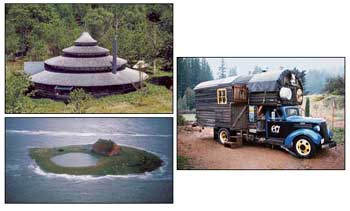

John Stiles (middle) roams the California countryside with his 14-donkey caravan (left) , carrying everything he needs to survive with him. "I travel the freeways and in huge metropolitan areas with no driver's license, no registration, no insurance, no taxes, no permits - nothing." Right: This Dust Bowl-era house was built from the most basic of building materials in a hostile environment, yet notice the subtle creativity in the dormer's urved eaves.